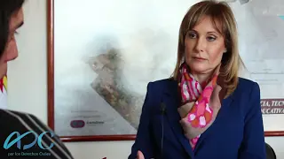
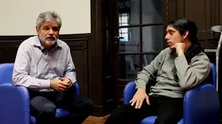
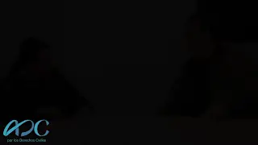
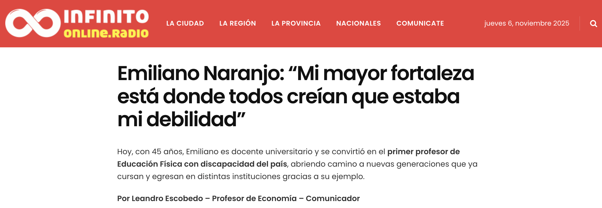
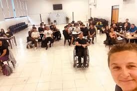
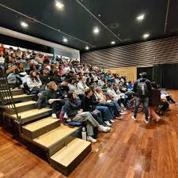
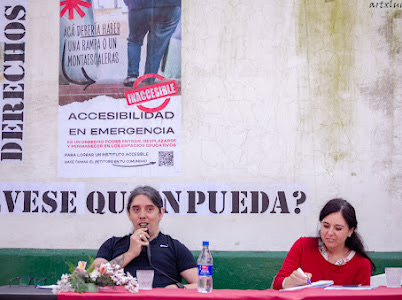
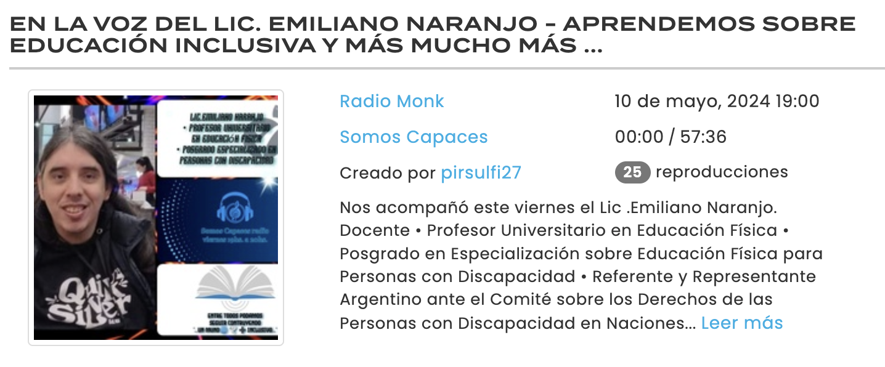

Silvina Gvirtz
Reflete sobre a formação docente e a necessidade de construir escolas acessíveis que reconheçam a diversidade e promovam a igualdade.
Ver entrevista ↗Educação inclusiva, direitos humanos e transformação social.
Conversas profundas com referências das políticas educacionais explorando inclusão, justiça social e os desafios que o sistema público enfrenta.

Reflete sobre a formação docente e a necessidade de construir escolas acessíveis que reconheçam a diversidade e promovam a igualdade.
Ver entrevista ↗Analisa desafios históricos e atuais para um sistema educacional que respeite as diferenças e garanta o direito de aprender a todas as pessoas.
Ver entrevista ↗
Fala sobre a relação entre educação, ciência e direitos humanos, e a importância de um sistema inclusivo que avance na justiça social.
Ver entrevista ↗
Enfatiza a responsabilidade do Estado em garantir o direito à educação inclusiva e transformar práticas escolares excludentes.
Ver entrevista ↗
Defende revisar modelos pedagógicos para construir sistemas educacionais realmente inclusivos e participativos.
Ver entrevista ↗
Relato sobre sua trajetória e as experiências que transformaram a deficiência em ferramenta de mudança.
Ler matéria completa ↗
Entrevista sobre docência inclusiva a partir da experiência pessoal e dos desafios do sistema educacional.
Ler matéria completa ↗
Crônica da formação “Práticas corporais para pessoas com deficiência” e da abordagem anticapacitista proposta.
Ler matéria completa ↗
Conversa sobre ativismo, reconhecimento e transformação educacional desde uma perspectiva crítica.
Ver entrevista (PDF) ↗
Diálogo sobre educação inclusiva, experiências docentes e os desafios da formação em direitos humanos.
Ouvir entrevista ↗
Conversa sobre educação inclusiva, acessibilidade e estratégias pedagógicas para transformar práticas em sala de aula e nos espaços comunitários.
Ver entrevista ↗
Diálogo sobre cotidiano, autonomia, família e construção de projetos coletivos com organizações de pessoas com deficiência.
Ouvir entrevista ↗